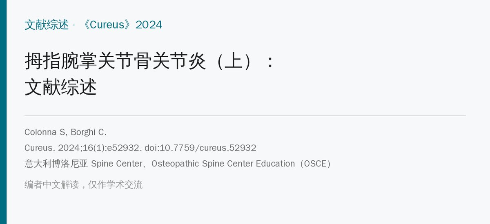
🔖原文信息（编者中文重排）
📚 文献信息
▪ Colonna S, Borghi C. Rhizarthrosis Part I: A Literature Review. Cureus. 2024;16(1):e52932. doi:10.7759/cureus.52932
▪ 作者单位：意大利博洛尼亚 Spine Center、Osteopathic Spine Center Education（OSCE）
▪ 文章类型：叙述性文献综述（两篇系列的上篇；下篇提出以第一背侧骨间肌为核心的训练方案）
拇指腕掌关节骨关节炎（rhizarthrosis，又称拇指基底关节炎）发生在大多角骨和第一掌骨基底之间。这个关节是马鞍形的，要让拇指能旋转、对掌；拇指承担了手 40% 以上的功能，一旦这里出问题，拿、捏、拧都受影响。
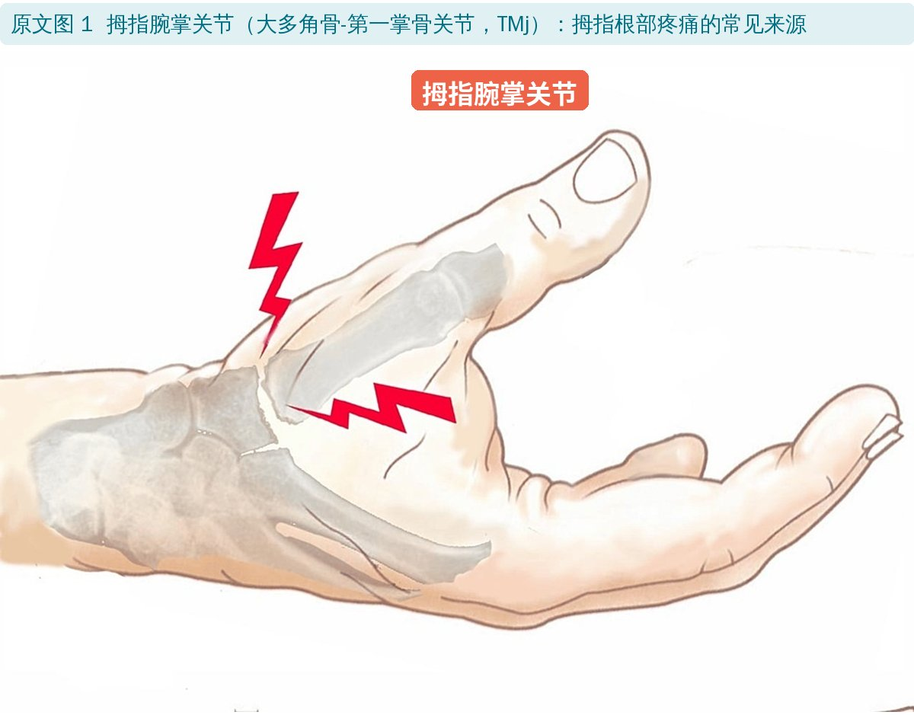
🔖原文图 1：拇指腕掌关节
• 女性多见：35 岁以上女性约 15%、男性约 1.4%；绝经后女性可达 25%，一半以上病例是 71 岁以上女性
• 可能原因：女性韧带更松、关节面更不吻合（也有研究认为主要是年龄的作用）；绝经后高发提示激素参与；手工劳动多、关节过度松弛（马凡综合征、Ehlers-Danlos 综合征）、外伤、类风湿等也可继发
• 握力测算：指尖用 1 kg 力捏东西时，拇指腕掌关节承受的压力约 12 kg，远高于掌指关节（5.4 kg）和指间关节（3 kg）
主要有 5 条韧带：前斜韧带（分浅、深层，即“喙状韧带”）、尺侧副韧带、掌骨间韧带、后斜韧带、桡侧副韧带（背桡侧韧带）。多数研究认为前斜韧带和背桡侧韧带是最主要的稳定结构。前斜韧带松弛时，拇指活动中反复出现的异常应力被认为是软骨退变的起点——退变先从掌侧开始，再扩展到背桡侧。
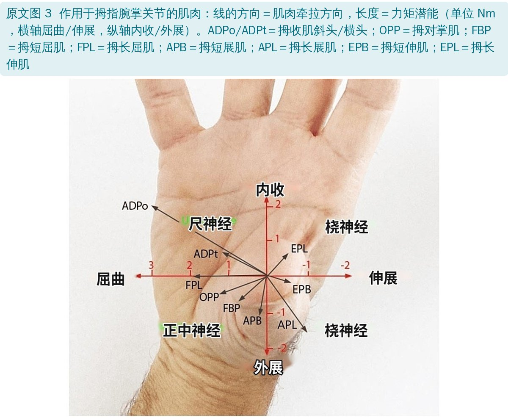
🔖原文图 3：各肌肉对腕掌关节的牵拉方向和力矩
• 作用于这个关节的肌肉很多：拇收肌、拇短/长屈肌、拇短/长展肌、拇对掌肌、拇短/长伸肌、第一掌侧和背侧骨间肌、蚓状肌。每块肌肉的力既可能让关节更吻合，也可能让它更不稳
• 第一背侧骨间肌被认为特别关键：尸体实验中，侧捏时去掉它的张力，第一掌骨基底就向桡侧半脱位；恢复张力后关节复位
• 第一掌骨相对大多角骨屈曲约 30°时关节最吻合。此时拇收肌斜头和拇对掌肌倾向把掌骨基底往桡侧推（促脱位），而第一背侧骨间肌正好对抗这个力
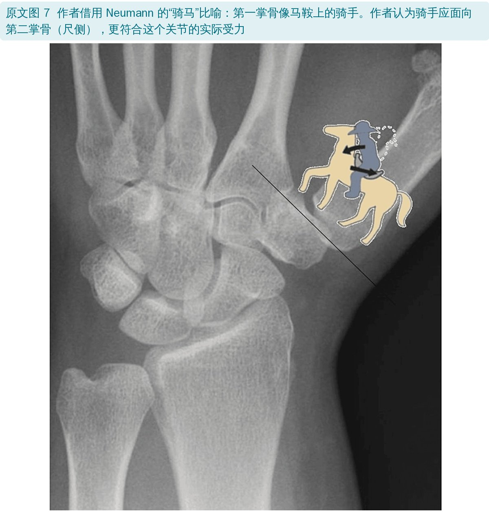
🔖原文图 7：“骑手”比喻
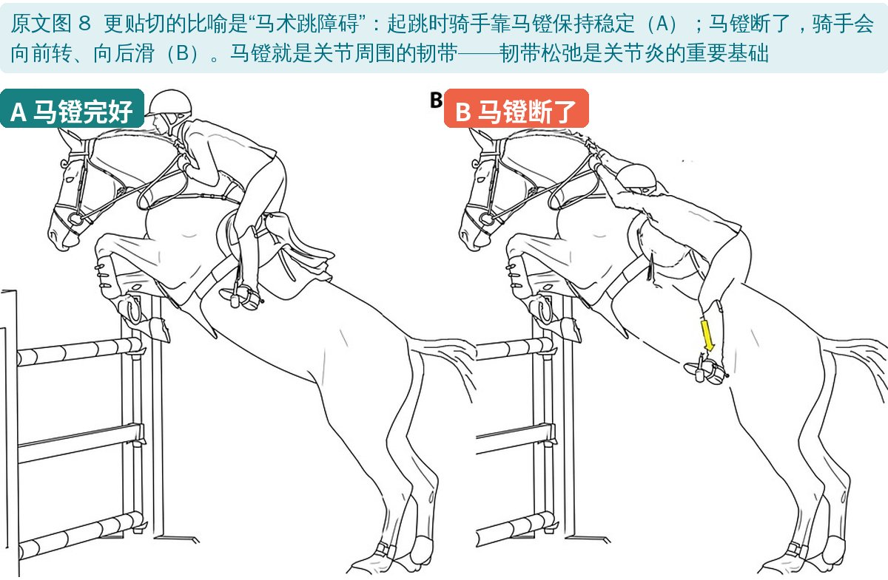
🔖原文图 8：马镫＝韧带
• 拇指根部疼痛：早期在用力和特定动作时痛，后期稍动就痛，严重时休息、睡觉也痛
• 捏力、握力下降，拿不住重物或大物件
• 关节僵硬，尤其拇指伸展和外展；患者为了避痛少用拇指，又让僵硬加重
• 晚期出现“Z 形拇指”：第一掌骨内收，掌指关节代偿性过伸，指间关节屈曲；大鱼际肌萎缩
• 常先在单侧（多为优势手），以后另一侧也常受累
先问清疼痛的部位、病程、诱因、频率、强度和性质，再做体格检查和特殊试验，需要时拍 X 线。有综述整理出 52 个评估试验，但仍无法很好地量化韧带松弛、负荷下表现、单块肌肉力量和前馈控制。
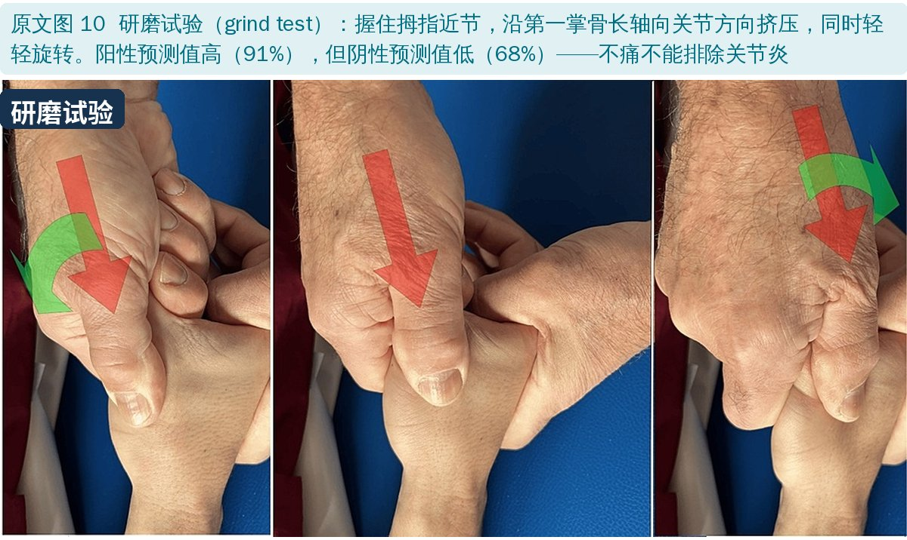
🔖原文图 10：研磨试验
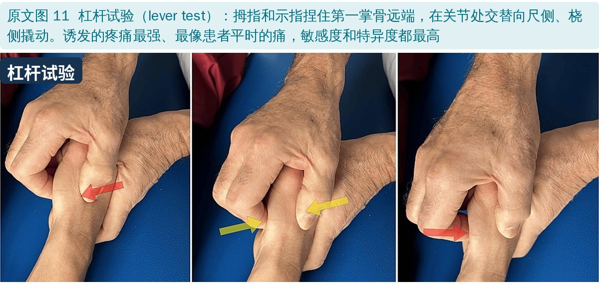
🔖原文图 11：杠杆试验
• 研磨试验：特异度高、敏感度最低；和 X 线的一致性一般（kappa 0.46）
• 杠杆试验：诱发疼痛最强、最像患者平时的痛，敏感度和特异度都最高
• 直接按压关节（尤其掌侧）也是有效的激发试验，可以和桡骨茎突狭窄性腱鞘炎（de Quervain 病）区分
需要鉴别的疾病（原文表 1）：
| 疾病 | 检查 |
|---|---|
| 舟骨骨折 | 鼻烟窝和舟骨结节压痛 |
| 桡骨茎突狭窄性腱鞘炎 | Finkelstein 试验、Eichhoff 试验 |
| 桡侧腕屈肌腱炎 | 前臂掌桡侧沿肌腱压痛；抗阻屈腕或抗阻桡偏诱发疼痛 |
| 腕管综合征 | Phalen 和反 Phalen 试验、Durkan 腕管压迫试验、Tinel 征 |
| 腕骨不稳 | 背侧/掌侧嵌入节段不稳（DISI/VISI）试验、非分离性腕骨不稳（CIND）试验 |
| 腕部腱鞘囊肿 | 根据病史和查体临床诊断 |
原文表 1：鉴别诊断用的手法检查（中文翻译）
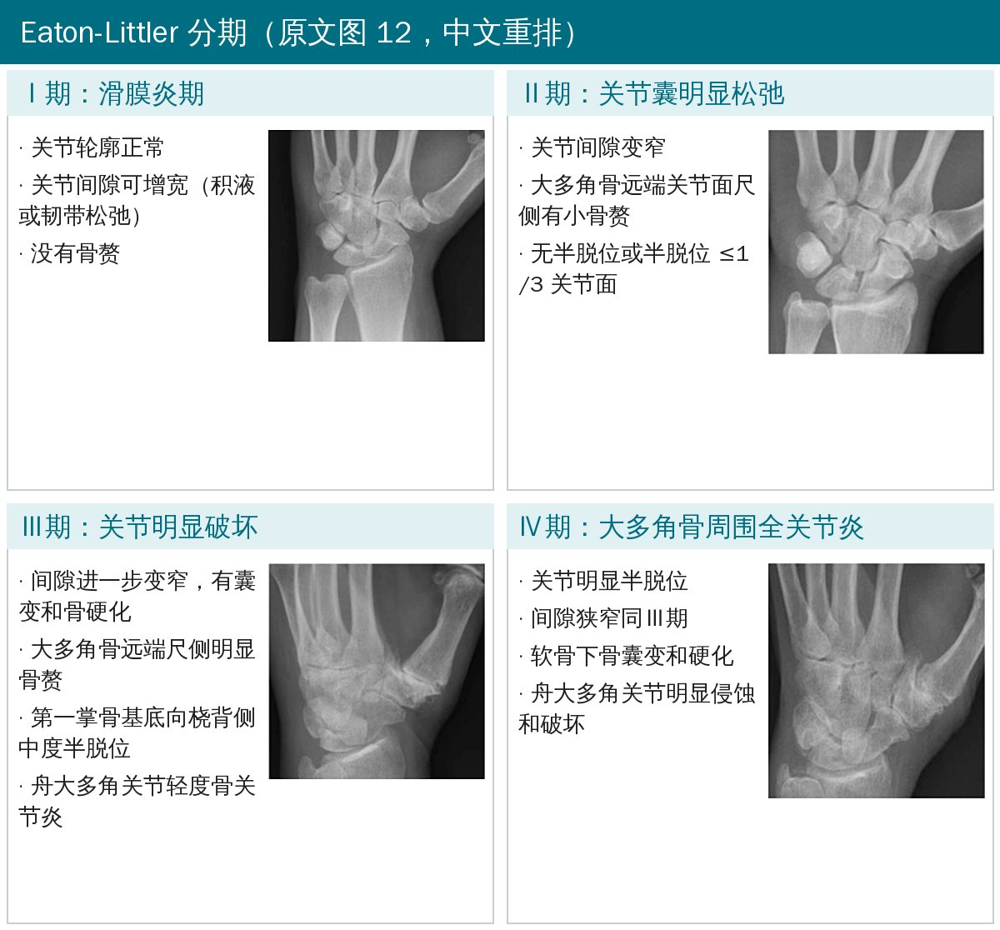
🔖Eaton-Littler 分期（原文图 12 中文重排）
X 线可见关节间隙变窄或消失、关节边缘骨赘。注意：影像分期和症状不一定对应，有研究认为只有Ⅲ、Ⅳ期才和临床表现相关。
目标是减轻疼痛和关节负荷、消炎，维持或提高力量、功能、稳定性和活动度。Eaton Ⅰ、Ⅱ期首选保守治疗，但具体选择更多取决于症状严重程度和患者的功能需求，而不是影像分期。
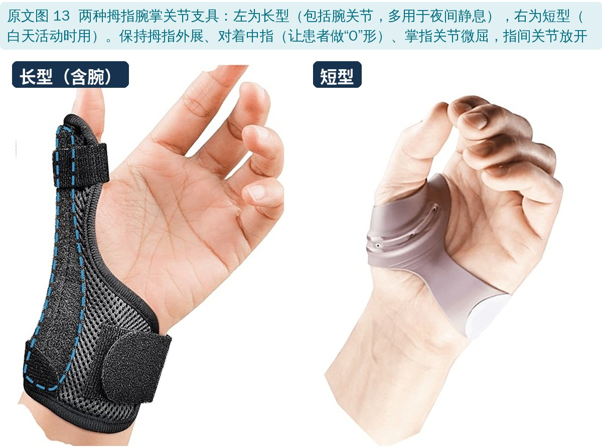
🔖原文图 13：长型和短型支具
• 支具是最常用的非手术治疗：增加稳定、减痛、消炎、减少诱发不稳的机械应力；但只在戴着时有用，摘下就没了
• Weiss 等比较长型对掌支具和更短的腕掌关节支具：两者减痛效果相当，但都不能提高捏力，也不能减轻捏东西时的痛
• 配合作业治疗：动作训练、使用长力臂的辅助器具省力
• 肌内效贴：两项研究报告效果不错（分别配合运动训练和手法治疗）
• Poole 和 Pellegrini 建议加强拇长展肌和拇长伸肌，维持基底关节的动态稳定
• 文献中的 5 个练习：拇指对掌、撕纸、在球面上画线、用筷子/夹子夹东西、捏球。练习时要避免腕掌关节塌陷或过伸，保持适当外展
• 以动态稳定为核心的策略：恢复虎口宽度；再训练拇指内外在肌，重点是第一背侧骨间肌及其拮抗肌（拇外展肌、伸肌）；松动关节止痛；加强维持稳定的肌肉
• Valdes 和 von der Heyde 建议主动和被动做：拇指屈曲、内收、对掌、腕掌关节伸展、指间关节屈曲
• 澳大利亚新南威尔士卫生部的物理治疗师制作了图文练习指南网站
这方面发表最多的是 Villafañe 团队，用过 4 种技术：
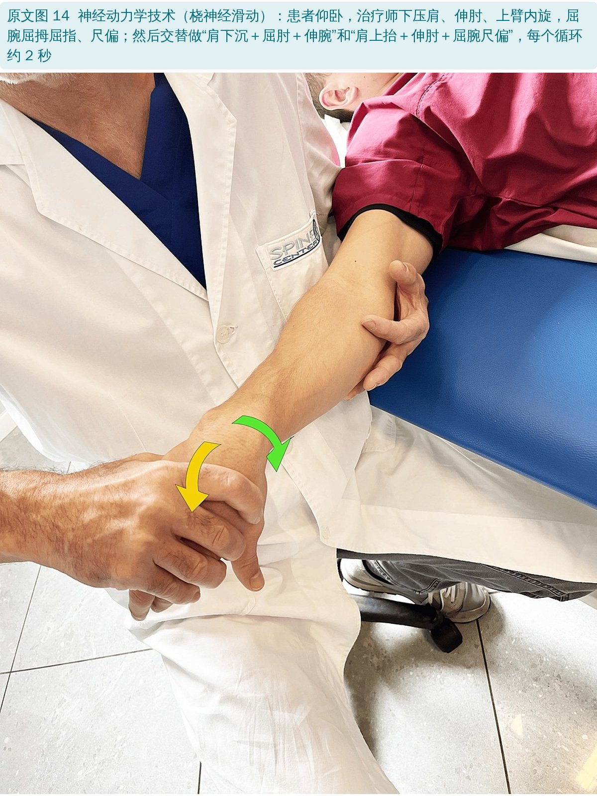
🔖原文图 14：神经动力学技术
• 神经动力学（桡神经滑动）：骨关节炎疼痛和外周、中枢敏化有关，疼痛程度不一定和关节破坏程度一致。30 名患者与 30 名对照比较，神经滑动后按压痛、指尖捏和三指捏表现更好；滑动比牵张更安全
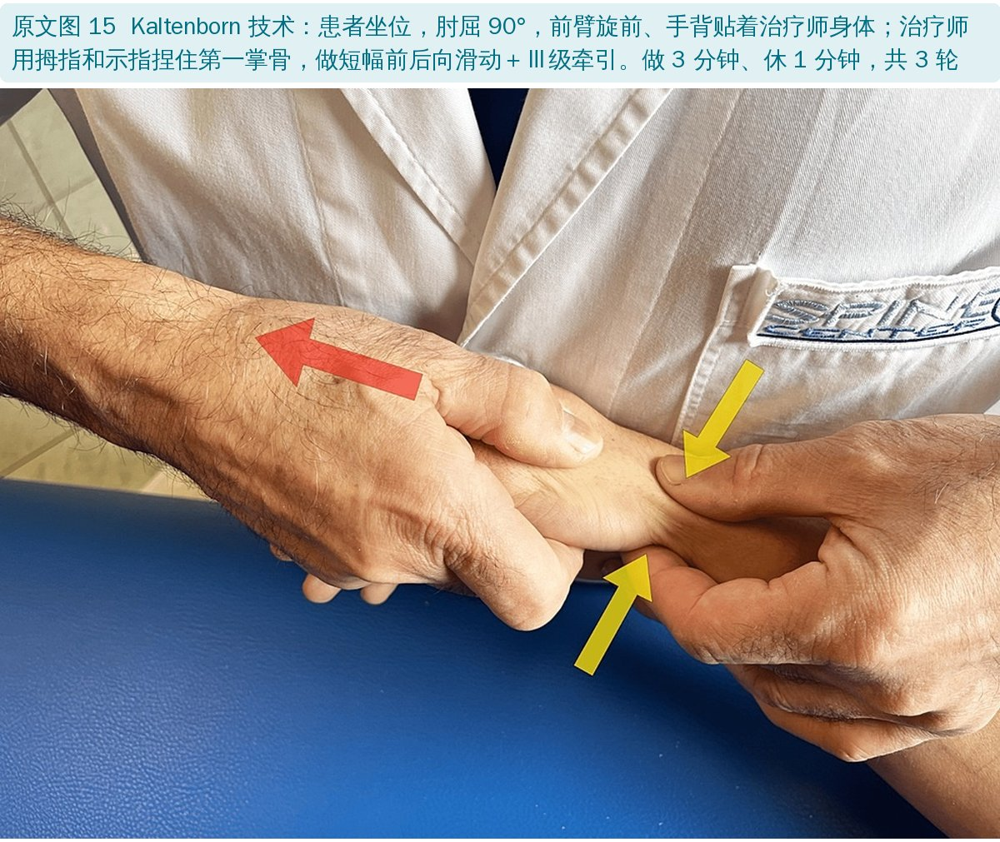
🔖原文图 15：Kaltenborn 技术
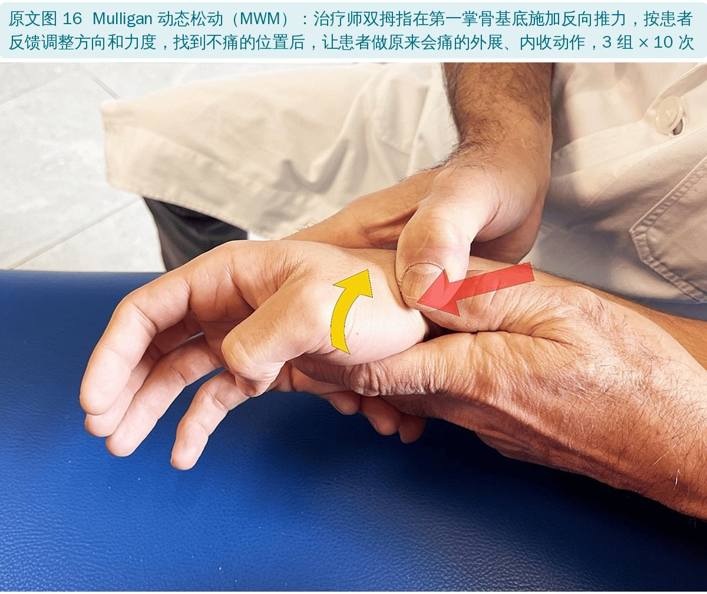
🔖原文图 16：Mulligan 动态松动
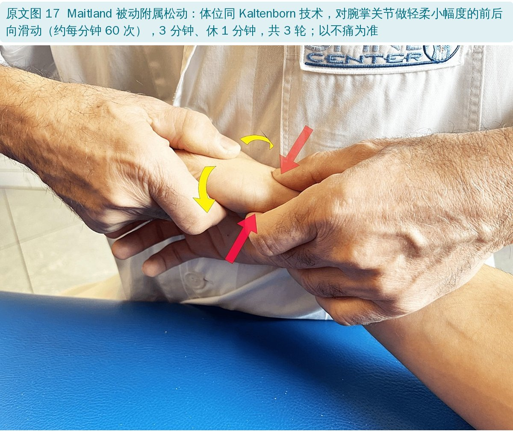
🔖原文图 17：Maitland 被动附属松动
• Kaltenborn：前后向滑动＋Ⅲ级牵引，按凹凸法则确定滑动方向
• Mulligan 动态松动：在第一掌骨基底施加无痛的矫正力，同时让患者做原本会痛的动作；以“操作时不痛、做完活动度改善”判断方法是否正确
• Maitland：4 次、2 周的前后向被动附属松动，明显减轻按压痛（与假治疗相比），但没有提高捏力和握力
• Ⅳ类激光、超声配合手法目前只有研究方案；冲击波与透明质酸注射比较，两组力量都提高，冲击波组捏力改善更好，持续至少 6 个月
• 关节腔注射透明质酸或激素，对疼痛和手功能效果都不错，透明质酸作用更持久；近年也有富血小板血浆的报道
• 2017 年更新的系统综述纳入 95 项随机试验：方法学质量有进步，但病例定义和结局指标不统一，无法做荟萃分析
• 关节融合术：稳定、止痛，但需长期制动、并发症率高（钢板与克氏针不愈合率都约 8%），现在较少用
• 韧带重建＋肌腱嵌入成形（LRTI）：国际上的参考术式（Burton 和 Pellegrini 1986 年描述），用桡侧腕屈肌腱重建前斜韧带
• 大多角骨切除术：多篇综述认为单纯切除的止痛和功能效果与 LRTI 相当，并发症更少；但握力下降、拇指列数月不稳。主要用于Ⅲ、Ⅳ期；相邻关节也受累时只能选它
• 人工关节：多用于老年人，3 周恢复功能、2 个月恢复握力，但约 15% 发生脱位或松动
• 成本效益：一项模型研究显示单纯大多角骨切除的质量调整生命年最高（14.14，LRTI 13.80，保守治疗 11.43），而且比 LRTI 便宜（8251 美元 vs 8798 美元）
• 叙述性综述：没有检索策略和纳入标准，文献选择带有作者倾向（作者团队本身在推广第一背侧骨间肌训练，下篇就是这个方案）
• 保守治疗证据薄弱：手法治疗主要来自同一团队的几项小样本研究；运动方案多数还没有对照试验验证
• “骑手”“马镫”的比喻帮助理解，但不是证据
• 适合作为入门概览：解剖、检查、分期、治疗选择都讲到了
• 骨名错误：全文多处把大多角骨（trapezium）写成 trapezius（斜方肌）或 trapezoidal（小多角骨的）
• 关节写错：研磨试验阴性预测值一句写“不能排除掌指关节骨关节炎”，应为腕掌关节
• 肌肉写错：把 de Quervain 病写成“拇短展肌/拇短伸肌腱鞘炎”，应为拇长展肌和拇短伸肌；把拇长展肌、拇长伸肌称为“大鱼际肌”，它们是前臂外在肌
• 研究对象写错：说 Farrell 等在“膝骨关节炎患者”的腕掌关节周围发现痛觉过敏，前后矛盾
• 牵引定义矛盾：写“Ⅲ级牵引是沿平行轴施加的额外力”，前一句刚说牵引是垂直于关节面的分离
• 滑动方向名称不一：Maitland 部分同一个技术先写“前后向滑动”，后又写成“后前向滑动”；Kaltenborn 和 Maitland 两段的体位、时长描述几乎完全相同
• 分期名称不统一：前文用 Eaton-Littler 分期，手术部分写 Eaton-Glickel 分期
• 流行病学用词：“发病率 15% 和 1.4%”实为患病率
• 成本研究：说随访“最多 12 个月”，结果却是终生质量调整生命年；保守治疗成本按 0 美元计
• 拇指根部痛先做杠杆试验和直接按压，研磨试验不痛不能排除；同时排除 de Quervain 病、舟骨骨折、腕管综合征等
• Ⅰ、Ⅱ期先保守：支具（夜间长型、白天短型）＋运动训练＋手法治疗的组合，比单一方法更有希望
• 训练重点：保持虎口宽度，练第一背侧骨间肌和拇外展、伸肌，避免腕掌关节塌陷或过伸
• 影像分期不等于症状轻重，按症状和功能需求决定治疗
• 具体的第一背侧骨间肌训练方法见下篇
欢迎关注骨科康复小黄公众号，获取更多物理治疗的专业知识！
📄参考文献：
Colonna S, Borghi C. Rhizarthrosis Part I: A Literature Review. Cureus. 2024;16(1):e52932. doi:10.7759/cureus.52932
原文以 CC BY 4.0 协议开放获取，版权归原作者所有。本文为学术交流中文解读：原文图 1、3、7、8、10、11、13～17 引自原文，图中中文标签为编者所加；图 12 由编者截取原图 X 线并用中文重排；表格为中文翻译。原文图 2、4、5、6、9 为经许可转载自其他出版物的图片，本文未使用。仅供学习交流，如有侵权请联系删除。